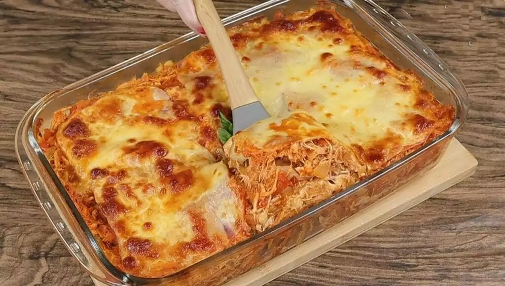

Ínicio
Senac
Chefs
Sobre
Login
• Lasanha de frango
Massas
Drinks
Sobremesas
Salgados
Aves
Peixes
Sopas
Lanches
Saudável
Bolos
Frutas
Frutas
Frutas
Frutas
Frutas
Frutas
Frutas
Frutas

❮
❯
Igredientes (4 porções)
🔸 1 Peito de frango;
🔸 400g de presunto fatiado;
🔸 1 pote de requeijão cremoso;
🔸 2 copos de leite;
🔸 2 colheres de farinha;
🔸 1 cebola média;
🔸 500g de queijo muçarela fatiado;
🔸 1 pacote de massa de lasanha;
🔸 2 caldos de galinha;
🔸 1 caixa de creme de leite;
🔸 3 colheres de manteiga;
Modo de preparo (45min)
Molho
🔸 Em uma panela, faça um creme homogêneo com as 2 colheres de farinha e 2 colheres de manteiga (reserve 1 colher de manteiga).
🔸 Acrescente o leite, 1 caldo de galinha e mexa constantemente.
🔸 Retire do fogo e acrescente o creme de leite, reserve.
Frango
Cozinhe o peito de frango em água (sem óleo), após cozido, desfie-o.
🔸 Pique a cebola em pedaços pequenos, coloque em uma panela e doure com a manteiga.
🔸 Acrescente o frango e o caldo de galinha, mexa sempre até o frango ficar totalmente dourado.
Montagem
🔸 Em um refratário, coloque 2 conchas de molho.
🔸 Faça a base com massa de lasanha, cubra com 1 camada de presunto, 1 de queijo e 1 de frango (nessa ordem).
🔸 Sobre o frango, coloque 1 camada de requeijão e 2 conchas de molho.
🔸 Cubra o requeijão com 1 camada de presunto, 1 camada de queijo e 1 camada de massa, coloque molho.
🔸 Repita esse processo até faltar cerca de 2,5 cm para chegar na borda do refratário.
🔸 Para finalizar, cubra a lasanha com muito queijo, requeijão e molho.
🔸 Asse por, aproximadamente, 20 minutos em fogo baixo.
Adicionar um comentário
Categorias relacionadas
Lasanha
Pizzas,empanados e calzones
Macarrão
Pães
Pizzas
Espaguete
Panqueca
Macarronada
Pão de queijo
Inhoque